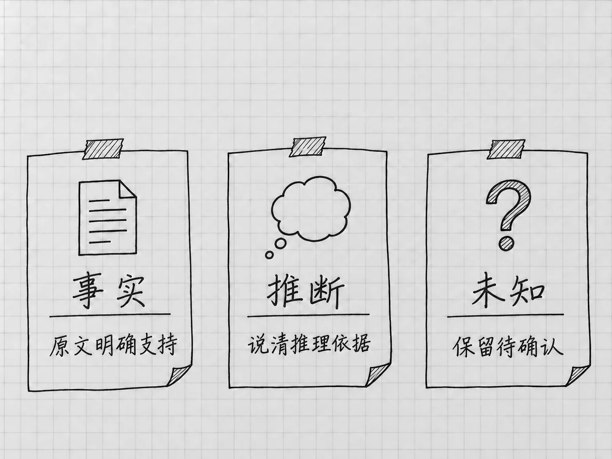

第11章 让Codex上网找资料，并检查来源
处理随书备忘时，原材料都在文件夹里。现在换一个问题：你想核对当前版本的安装要求，或者某个功能最近有没有变化。这些内容模型原有的知识里可能没有，需要实际去看网页。
回答写得流畅，和这次确实上网查过，是两件事。联网查证要管好问题、来源和结论三样，最后得到一份能够回头检查的答案。
先把「查什么」说清楚
「帮我研究一下Codex」范围太大。可以从你现在遇到的具体问题出发：
请联网查当前官方说明：我使用Windows，已经安装桌面应用并用ChatGPT账号登录，第一次读取本地项目文件之前，还可能需要完成哪些设置？请优先打开官方原页，区分安装应用、登录和首次本地运行设置。写明核对日期、适用条件与原页链接；没查到的条件保持未知。这里只查资料，先不要在我的电脑上执行设置。
这段话限定了系统、起点和问题，也说清这轮只查证，电脑上的设置先不动。Mac读者把平台换成Mac即可。一次只问一个平台，回答里的步骤才不会混在一起。
问题本身随时间变化时，写上「截至今天」或一个明确日期。资料谈的是哪个产品、哪个入口、哪个版本，也要对得上。桌面应用、网页和终端工具共用一个名称，操作却各不相同。
看它是否真的搜索、读取
发送联网要求以后，留意任务中的工具活动和最后的来源链接。一次查证通常包含寻找相关页面、打开原页、提取与问题有关的内容，次序可以不同，我们核对的是这几个环节有没有做到。
只看搜索结果的标题或摘要往往不够：摘要会省略前提，旧页面也可能排在前面。遇到决定操作顺序的关键条件，要求它打开原页确认。页面读不到时，让它照实说明读取失败。
Codex的网页搜索可以使用托管的搜索能力。本地搜索设置可能使用缓存结果，所以需要当前信息时要明确提出，并检查来源的时间。官方网页搜索说明
链接能打开，还要看它支持什么
结果返回后，先点开影响判断的那几个链接。对于安装问题，至少要看清平台要求、安装入口和首次运行条件所在的段落。
可以用四个问题读一条依据：
| 要检查的地方 | 为什么要看 |
|---|---|
| 这是不是原始发布者的页面 | 转述可能删掉条件，原页更容易核对 |
| 页面说的是哪个入口和平台 | CLI的键位不能直接拿来教桌面应用 |
| 这段话实际支持什么 | 「逐步开放」不能写成「人人现在都有」 |
| 日期和后续更新是否匹配 | 页面较新不代表它解释的旧操作仍是主线 |
尤其注意结论有没有比来源说得更多。原文只说支持某个平台，回答却补成「安装后不用任何设置」，后半句就需要另找证据。
链接的数量说明不了什么。十个页面都引用同一则旧消息，依据仍然只有一个，而且是过时的。一个当前的、直接对应问题的官方段落，比许多无关链接有用。
把事实、推断和未知分开
收到结果时，可以让它按具体问题说明三种情况：原文直接确认了什么，根据材料推断了什么，哪些条件仍未查到。格式不拘，三种信息的口气要有区别。

图：区分原文确认、根据材料推断和仍未查到，不让推测变成事实。
例如，官方页面说明某功能正在逐步开放。这句话支持「有些账号暂时看不到」。至于你看不到按钮的原因，账号未开放只是可能之一，入口、版本或组织设置不同也会这样。要继续判断，就需要你的当前情况和更具体的证据。
多个来源冲突时，先比较它们讨论的对象和时间。一个讲网页、一个讲桌面，多半并不冲突；两个都讲桌面，但一个早了几个月，就去查后续更新。仍然确定不了的，把分歧原样留下。两套步骤拼在一起，得到的是一份谁也没验证过的新教程。
网页内容只是本次材料
网页中可能包含对读者的建议，也可能出现要求忽略原任务、运行命令或上传文件的文字。这些都是网页上的内容。Codex该做什么，由你在任务里的要求决定。
单纯查证时，可以把范围写明：只阅读和整理来源，不下载执行程序，不发送自己的文件，不修改账号设置。查到一段命令，先请它解释这段命令会做什么，再看当前任务是否需要执行。
搜索网页和操作你的浏览器是两项能力。普通网页读取遇到登录页面时，用不了你在另一个浏览器里的登录状态。怎样有选择地交出浏览器页面，第22章讲。
同样，托管网页搜索和电脑上的命令联网是不同通道。它已经查到官网，稍后下载文件时仍可能出现另一个联网或权限请求。那次请求要重新看下载对象和操作目的。搜索与本地权限的区别
让查证留下以后能用的结果
需要留存的查证，可以要求保存一份简短记录：问题是什么，何时查的，结论适用于哪些条件，支持结论的原页，以及未解决的问题。只留「已查证」三个字，过一段时间就说不清当时检查了什么。
例如在「我的待办」项目里，另开一个资料查证任务，把结果保存为「结果/桌面设置查证.txt」，本轮不改待办清单。写明保存位置后，按上一章的方法打开文件，检查链接是否仍能定位到对应说明。
联网查证是为了补上当前任务缺少的依据。查到的材料足够支持眼前的判断，就回到原来的工作；仍有未知，就写明停在哪里。